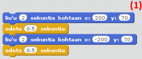

Kolmas tunti
Tänään opettelemme käyttämään "jos - niin"-palikkaa. Kirjaudu Scratchiin, avaa
Maze Starter ja kokeile. Sokkelo toimii nuolinäppäimillä.
Ensimmäinen tehtävä
Lisää sokkeloon lentävä lepakko.Tee näin:
-
Klikkaa "Katso sisälle", niin näet projektin koodin. Klikkaa "remix".
Etsi hahmokirjastosta lepakko ja lisää se projektiin.
Tee koodi, jolla saat lepakon näkymään sopivassa paikassa, kun vihreää lippua klikataan. Löydät sopivan palikan "Liike"-valikosta.
Laita lepakko liukumaan edestakaisin(1).
Laita liukuminen tapahtumaan ikuisesti.
Yhdistä lepakon koodit niin, että lepakko alkaa liukua, kun vihreää lippua klikataan.
Tee lepakolle toinen koodi. Aloita ottamalla "Ohjaus"-valikosta "jos - niin"-palikka.
Vedä "Tuntoaisti"-valikosta "koskettaako"-palikka "jos - niin"-palikassa olevaan tilaan. Valitse nuolesta "Ball"(2).
Valitse "Ulkonäkö"- tai "Ääni"-valikosta, mitä haluat lepakon tekevän, kun pallo osuu siihen.
Laita koodi toistumaan ikuisesti, kun vihreää lippua klikataan.


Jatkotehtävä:
Tee peliin pistelaskuri.Voit antaa pallolle pisteitä maaliin osumisesta ja miinuspisteitä lepakkoon osumisesta. Jos haluat tehdä peliin pistelaskurin, aktivoi pallon hahmo ja avaa Tieto-valikko.
-
Klikkaa "Tee muuttuja".
Anna muuttujalle nimeksi "Pisteet".
Nyt voit käyttää muuttujaa ja koodata pistelaskurin. Tarvitset muun muassa "jos - niin"-palikkaa.